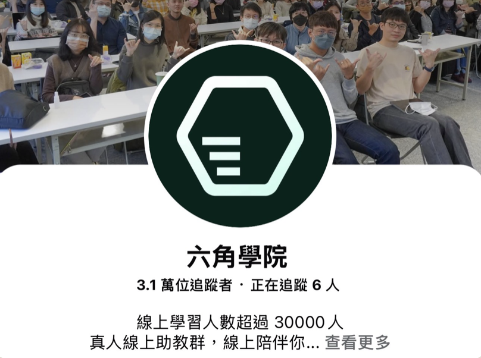
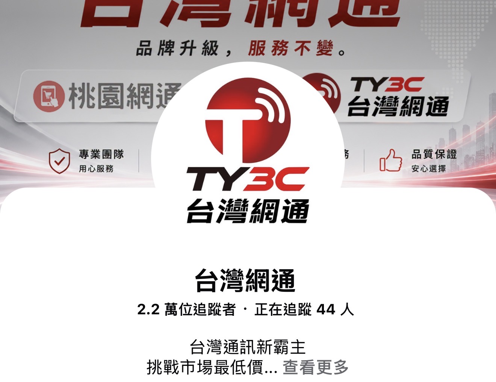

你真正想吸引的，
是哪一種客戶？
同樣是餐飲，想找吃飯的客人，和想找加盟的人，影片要回答的問題就不同。從生意目標，重新看你該對誰說話。
帶走的判斷看的人，和會買的人，是不是同一群？
讓你的內容，開始帶來客戶。
實體兩小時，從客戶、題材、影片第一句到真實案例，找到下一支影片的方向。
品牌經營者 ／ 專業工作者 ／ 行銷負責人

從客群、選題與開頭切入，透過實際案例理解內容如何帶來詢問，讓你的下一支影片有方向。
同樣是餐飲，想找吃飯的客人，和想找加盟的人，影片要回答的問題就不同。從生意目標，重新看你該對誰說話。
帶走的判斷看的人，和會買的人，是不是同一群？
用「流量與變現」的觀點，看懂觀看、互動與詢問的差別。有人看得開心，也有人開始問價格、店面與合作方式。
帶走的判斷除了觀看數，這支影片帶來了什麼反應？
從客戶常問、容易誤會、經常犯錯與想看的內容，找出四種題材來源。把日常對話，轉成有方向的選題。
帶走的判斷這個題目，是我想講，還是客戶在意？
從「一碗螺螄粉能賺多少？」到「萬物皆可包的花店」，拆解開頭如何點出需求與差異，讓觀眾知道為什麼值得看。
帶走的判斷這句開頭，會吸引誰繼續看？
從澳洲實地拍攝到花店特色，看案例如何把現場、產品與專業呈現出來，回應客戶還不敢行動的疑問。
帶走的判斷影片裡，有沒有讓人願意相信的具體證據？
認識開頭、內容主體與行動引導的分工。依影片目的，思考要邀請詢問、到店或進一步了解，也知道何時不必急著推銷。
帶走的判斷有興趣的人，知不知道下一步怎麼找你？
 加盟品牌
加盟品牌0廣告費，透過短影音精準收單數千萬元
 知識課程
知識課程ROAS大於5X
 專業服務
專業服務廣告成本大幅降低
盲點：先想拍什麼，卻沒想清楚要帶來什麼生意。
先確定客群與轉化目標，精準打到痛點，再從客戶的問題找題材。
從房仲跳舞轉向買房需求與疑問，LINE 私域新增近 5,000 位精準名單。

盲點：觀眾喜歡看，不代表有理由買。
把產品特色、顧客口碑與使用情境放進內容，吸引真正會消費的人。
從老闆員工閒聊素材，轉向餐點特色與來店理由，零廣告，第一個月業績翻倍。
盲點：影片精緻、預算增加，也無法取代客戶共鳴。
用客戶聽得懂的話，說中困擾、展示解法，讓內容更接地氣。
導入短影音後，單次課程學生數從 600–800 位提升至 1,300–1,500 位，廣告成本明顯下降。

老闆自己覺得很不錯，客戶卻沒有看下去的理由。
流量很高，但留言跟自己的生意沒有關係。
觀眾開始問：怎麼買、怎麼訂、怎麼加盟。
先想清楚要吸引誰、他為什麼會買，再決定影片怎麼拍。
這就是這場講座要帶你練習的收單思維。
兩支影片都能讓人看下去，但題目不同，吸引來的討論也不同。這場講座會從這樣的對照，拆開選題背後的思路。
觀眾聊角色反應、尷尬場面與笑點。內容有人看，留言多半圍繞劇情。
觀眾開始問加盟、店面、城市與合作方式。從留言，看見對經營這門生意的興趣。
講座案例題目｜來自 Chance 簡報。用留言方向觀察需求，不把詢問當成已成交。
以通訊行為例，從四種來源找題目。以下是依方法整理的示例，並非實際客戶對話。
換手機，LINE 聊天紀錄怎麼搬？
0 元手機，真的一毛錢都不用付？
換機前沒備份，哪些資料可能帶不走？
舊手機估價，到底看哪些條件？
從房產、花店到通訊行，產品不同，要解決的客戶問題也不同。
Chance 會拆開案例裡的選題與做法，帶你思考自己的生意可以怎麼拍。
收到客戶赴澳看房的詢問
高單價、跨國看房，客戶需要先相信你。Chance 建議先到澳洲實地拍攝，讓觀眾看見她就在當地，接著收到想赴澳看房的聯繫。
客戶決定前最擔心什麼？讓影片呈現真實現場，回答他還不敢行動的原因。

外縣市客人專程來買
原本主要服務路過的學生。簡報以「萬物皆可包的花店」呈現特色；經營短影音後，吸引外縣市長輩特地前來。
把「我們有賣什麼」往前想一步：你的產品有什麼特別，能成為客人記得你、想來找你的理由？

客人開始問：其他縣市有沒有開？
原名桃園網通。短影音讓更多人認識出鏡員工，也讓客人開始詢問其他縣市是否有門市，品牌開始朝全台市場規劃。
客人問價格、問店面、問怎麼買，都是內容可以回應的線索。把這些問題變成下一支影片的題材。
案例來源：Chance 講座簡報。以上為個別品牌經驗，詢問與看房不等於成交；實際成果依產品、市場與執行而異。

把傳統生意，帶進手機裡。
讓專業被看見，也被理解。
從品牌行銷到短影音操盤，將產品價值轉成顧客聽得懂的內容。帶你理解每個案例背後，為什麼選這個人、說這件事、安排這個下一步。
把你的專業說清楚，
讓需要你的人，知道如何找到你。
億萬變現全攻略 · Chance
讓開始這件事，再清楚一點。
內容從受眾與帳號定位開始，適合先釐清方向。你可以先整理自己的產品、服務與客戶常見問題，帶著具體情境聆聽分享。
可以依產業選擇產品示範、工作過程或由團隊出鏡。簡報也討論老闆本人、幕後策劃與專業團隊等方式，重點是找到能持續執行且傳達專業的形式。
本場以短影音商業思維與真實案例分享為主，幫助你理解內容如何吸引客戶，並非拍攝、剪輯軟體的完整實作課程。
自然流量與付費流量可以有不同角色。講座會從案例分享兩者的差異與投放思考，是否投入預算，仍需依產品、內容成效與獲客目標判斷。
這是一場免費實體講座，請到啟程空間參加，地址為台北市南京東路三段9號5樓。
2026 年 11 月 19 日（四）19:30–21:30，現場分享兩小時，免費參加。請在本頁確認場次，再前往 Chance 官方 LINE 完成報名。